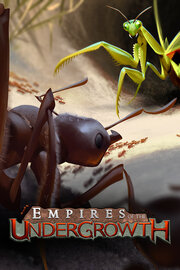

Empires of the Undergrowth Demo
Empires of the Undergrowth Demo
Detalles
|  | |
| Tiempo de juego | No Jugado |
| Última actividad | Nunca |
| Añadido | 19/07/2024 16:59:39 |
| Modificado | 19/07/2024 17:01:49 |
| Estado de finalización | Not Played |
| Librería | Steam |
| Fuente | Steam |
| Plataforma | PC (Windows) |
| Fecha de lanzamiento | 07/05/2019 |
| Puntuación de la Comunidad | 79 |
| Puntuación de la Crítica | |
| Puntuación de usuario | |
| Género | Indie Simulation Strategy |
| Desarrollador | Slug Disco |
| Editor | Hooded Horse Slug Disco |
| Característica | Achievements Cloud Saves Game Demo Single Player |
| Enlaces | Punto de encuentro Discusiones Guías Noticias Página de la tienda PCGamingWiki Logros |
| Tag | 2D Automation base-building building City Builder Colony Sim Crafting Economy Management Moddable Open World Replay Value Resource Management rts Sandbox Sci-fi Simulation Singleplayer Strategy Survival |
Descripción
Forge your empire in the world of ants, building extensive nests and managing an intricate hierarchy in a way that puts the real-time strategy genre under the microscope. Control a variety of warrior ant species in intense battles, command your workers to build and supply an ever-expanding base, and protect your queen at all costs while navigating the unique threats and opportunities of the insect world.


Hundreds of warriors clash in a melee of gnashing mandibles as formic acid artillery fires overhead. Nightfall has come and the last of the workers are rushing back underground, dodging beetles to deliver food to the nest. The stockpile is empty, and without more, reinforcements will not hatch for the ongoing war between the duelling Empires of the Undergrowth.


Workers scurry in from the surface. Few have returned, but they carry valuable sources of food that will help reinforce the front as a new wave of warriors pour forth from the nurseries, eagerly following the scent of pheromones that tell them where to go and what to do en route. They are the last bastion of the colony, born with a singular purpose – hold the line!


Victory is certain! Reinforcing troops arrive in the nick of time, fearless in the face of the horrifying abomination before them. Today the sadistic scientist has blended hermit crabs with scorpions into a terrifying new threat, but the colony has evolved wisely after experiencing such unnatural foes before. After a protracted battle the fearsome chimaera teeters on the brink of collapse, but a new foe arrives on the battlefield – piercing through the skies above, the hand of some strange being comes down to crush half the reinforcing troops, and from the great beyond the scientist lets forth an evil cackle. The tide has turned once more…
Apart from the classic RTS skirmishes against the AI and unique seasonal challenges, Empires of the Undergrowth also features a narrative-driven campaign mode. Follow the simultaneous progress of a lab experiment centred around the mysterious Formica ereptor gene-thief ants alongside a documentary series that explores the various species of ants in their natural biomes. Earn resources through successful documentary missions to upgrade your persistent lab colony and evolve according to your preferred playstyle as you put your ants through a multitude of brutal tests conducted in the name of ‘science’ – but not all is as it first seems…

Hundreds of warriors clash in a melee of gnashing mandibles as formic acid artillery fires overhead. Nightfall has come and the last of the workers are rushing back underground, dodging beetles to deliver food to the nest. The stockpile is empty, and without more, reinforcements will not hatch for the ongoing war between the duelling Empires of the Undergrowth.
- Starting from a central room hosting your queen, order your workers to develop and optimise your nest – a vast network of store rooms, nurseries, and hallways. Dig through a hex-based maze of soil and bedrock, seeking food and fending off other underground dwellers.
- Push beyond the confines of your nest to see what the world above has to offer – with seeds, nectar, fungus, other insects, and even amphibians on the menu, there's plenty to choose from, but each food source comes with its own strategic tradeoffs and challenges. Will you venture forth and fight off the ladybugs that eat and deplete your source of renewable honeydew drops, or do the surrounding nocturnal creatures present too much of a risk for your fledgling colony? Each decision you make has a ripple effect that can doom your colony if you aren’t quick to react to evolving circumstances.
- Manage a multitude of species with different attack patterns, natural weapons, and evolutionary paths to tackle the particular dangers of your current biome. Nighttime sorties are at times essential as you look to secure food supplies, though unsuspecting ants might fall prey to the dangers that lurk after sundown. Come morning, you’ll find yourself competing with other ant colonies instead, entering enemy nests to attack their queens while defending your own. Prepare to operate and coordinate simultaneous war efforts across multiple underground and overground maps as your threats and opportunities change with each passing moment – there’s no single path to domination.
Workers scurry in from the surface. Few have returned, but they carry valuable sources of food that will help reinforce the front as a new wave of warriors pour forth from the nurseries, eagerly following the scent of pheromones that tell them where to go and what to do en route. They are the last bastion of the colony, born with a singular purpose – hold the line!
- Design and organise multiple nurseries and assign them individual pheromone groups, with each pheromone group taking orders through the placement of pheromone markers, adjustable rules of engagement, and context. Learning to navigate the behaviours of your ants, as well as each species’ strengths and weaknesses, is integral to securing success.
- Each pheromone group can be specialised on the fly, told to exclusively collect food, partake in combat, or do both – the right decision can turn the tide of battle. In desperate times, when the colony is starving and new eggs have stopped hatching as a result, will your warrior caste focus on gathering food at the risk of being picked off by aggressive enemies en route? Or will the soldiers divide into escort groups for your remaining workers, ensuring survivability at the cost of overall efficiency elsewhere? Don’t forget to keep at least some workers at the nest to dig, build, and maintain the placement of eggs, to ensure the survival of your ant economy.
- Each species of ant presents its own set of strengths and weaknesses on the battlefield. In special game modes where multiple species can be raised in the same colony, your decision to raise and upgrade one or the other will completely change the way you do battle. Trap-jaw ants fight in melee, occasionally leaping back to replenish lost hitpoints. Leafcutter majors fulfil their natural role as protectors by drawing enemy aggression onto themselves to give allied ants an opportunity to flank, regroup, or escape. Wood ants can evolve to fire formic acid as long range artillery or in a more rapid, straight line. Find synergies between the multitude of natural strengths and weaknesses of each species, and prepare to defend against them when warring with rival colonies.
- Your enemies are equally varied – apart from other ant colonies, you’ll engage in combat against arachnids, amphibians, crustaceans, and a wide variety of insect species. These powerful and often (comparatively) gigantic creatures present a unique threat to an unprepared colony, and only superior tactics can overcome them. An envelopment manoeuvre can circumvent the adult devil’s coach horse beetle's stunning spray, while tactically isolating and overwhelming hermit crabs one by one will bring their demise faster than they can hunker down to heal.
Victory is certain! Reinforcing troops arrive in the nick of time, fearless in the face of the horrifying abomination before them. Today the sadistic scientist has blended hermit crabs with scorpions into a terrifying new threat, but the colony has evolved wisely after experiencing such unnatural foes before. After a protracted battle the fearsome chimaera teeters on the brink of collapse, but a new foe arrives on the battlefield – piercing through the skies above, the hand of some strange being comes down to crush half the reinforcing troops, and from the great beyond the scientist lets forth an evil cackle. The tide has turned once more…
Apart from the classic RTS skirmishes against the AI and unique seasonal challenges, Empires of the Undergrowth also features a narrative-driven campaign mode. Follow the simultaneous progress of a lab experiment centred around the mysterious Formica ereptor gene-thief ants alongside a documentary series that explores the various species of ants in their natural biomes. Earn resources through successful documentary missions to upgrade your persistent lab colony and evolve according to your preferred playstyle as you put your ants through a multitude of brutal tests conducted in the name of ‘science’ – but not all is as it first seems…